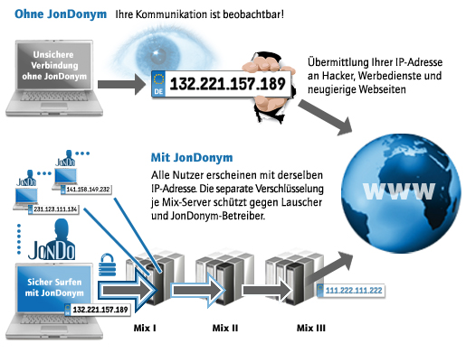

WWW-Privatsphäre Inhalt
WWW-Privatsphäre Inhalt  Einführung Zertifikate
Einführung Zertifikate WWW-Privatsphäre Inhalt
Einführung Zertifikate
Die JonDonym/AN.ON-Technik basiert auf dem Prinzip der mehrfachen (schichtweisen) Verschlüsselung, Verteilung und Weiterleitung. Dieses Verfahren schützt Ihre Internet-Aktivitäten nicht nur vor Beobachtung von Dritter Seite (gegen Ihren Zugangs-Provider, WLAN-Hacker, Werbedienste und Webseiten), sondern auch vor einer Beobachtung durch die einzelnen Anbieter von JonDonym selbst (gegen die Betreiber von JonDonym-Diensten und deren Abrechnungsdienstleister).
Der Anonymisierungsdienst JonDonym ist ein Entwicklungszweig des AN.ON-Projekts. Er besteht aus mehreren einzeln wählbaren Mix-Kaskaden. Diese setzen sich aus zwei bis drei Mix-Servern mit jeweils separater Verschlüsselung zusammen. Diese Server werden jeweils unabhängigen Organisationen oder Privatpersonen betrieben, deren Identität veröffentlicht wird. Die Betreiber müssen sich an strikte Betriebsrichtlinien halten, die ihnen verbieten, Verbindungsdaten zu speichern oder mit den anderen Mix-Betreibern oder mit einer dritten Organisation Surfdaten von Nutzern auszutauschen. Jede Internetverbindung eines Nutzers wird für jeden Mix einer Kaskade unterschiedlich verschlüsselt und über die Mixkaskade bis zum Ziel, z.B. zu einer Webseite, gesendet. Dadurch kann kein Mixbetreiber alleine den Nutzer enttarnen. Lauscher auf den Verbindungen zu JonDonym-Kaskaden können keine brauchbaren Inhaltsdaten abgreifen, da die Verbindung zu jedem Mix einzeln verschlüsselt wird. Da außerdem viele Benutzer gleichzeitig den Anonymisierungsdienst nutzen und sich dabei alle dieselbe IP-Adresse teilen, werden die Internetverbindungen jedes Benutzers unter denen aller anderen Benutzer auf derselben Kaskade versteckt: eine Zuordnung ist somit nicht mehr möglich.

JonDonym bietet im Vergleich zu anderen Anonymisierungsdiensten viele Vorteile:
Eine ähnliche Anonymisierung kann nur die nicht-kommerzielle Software Tor bieten. Während die Tor-Hidden-Services (versteckte Dienste, ein besonderes Tor-Feature) etwas anfällig sind, sind die Tor-Nutzer selbst, ähnlich wie bei JonDonym, auch gegen TCP-Timestamp-Angriffe geschützt. Internet-Anfänger sollten mit Tor jedoch vorsichtig sein: es wird nicht kontrolliert, welche Menschen die Tor-Server betreiben über die Ihre privaten Kommunikationsdaten laufen. In der Vergangenheit gab es immer wieder den Verdacht, dass Kriminelle und Geheimdienste das Tor-Netzwerk missbrauchen, um unbemerkt unverschlüsselt übertragene Informationen wie Passwörter, Kontoverbindungen und Kreditkartendaten abzufangen und zu missbrauchen. Mit bestimmten Tricks können einzelne Tor-Server außerdem besonders viel Datenverkehr auf sich leiten um diese Angriffe effektiver zu machen. Tor kann aber gefahrlos als Proxy in JonDo eingetragen werden, wodurch das Surfen zwar deutlich langsamer, aber in Einzelfällen noch sicherer wird als mit JonDo allein. Denn die letzten Server in der Kette sind dann Teil des verifizierten JonDonym-Netzwerkes.
Wie bei Tor könnte auch der jeweils letzte Mix-Server einer JonDonym-Kaskade Datenverkehr, der nicht zusätzlich über eine verschlüsselte Verbindung wie HTTPS/SSL gesichert ist (muss von der Webseite selbst angeboten werden), mitschneiden. Im Gegensatz zu Tor und anderen Diensten dürfen allerdings nur von JonDos und eventuell weiteren Zertifizierungsstellen geprüfte und namentlich veröffentlichte Personen und Organisationen einen Mix-Server betreiben. Die Nutzer können dann selbst entscheiden, ob sie den jeweiligen Betreibern vertrauen möchten oder nicht. Bei Bedarf können sie einfach andere Betreiber wählen. Dadurch wird es sehr unwahrscheinlich, dass sich kriminelle Betreiber in JonDonym einschleichen.